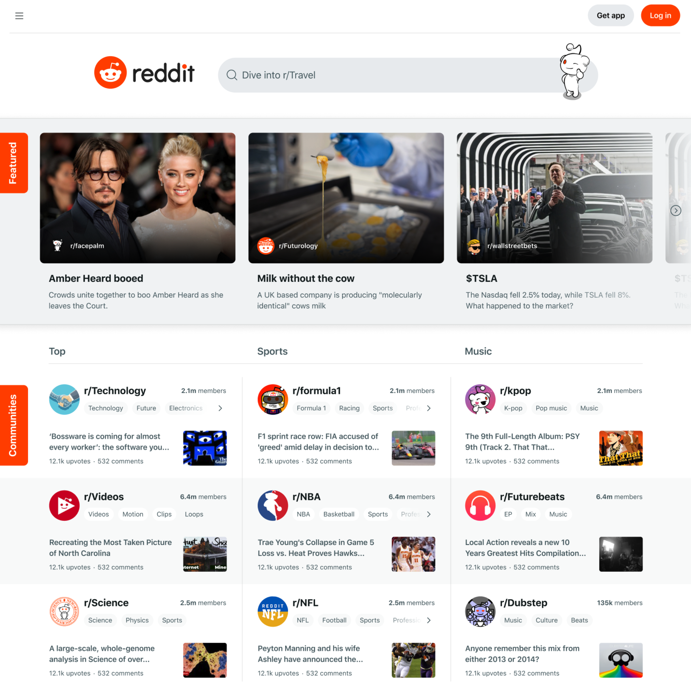

Case Study: Reddit Home and Post Details
- Role Product Design Lead
- Stakeholders Product, Design and Engineering SVPs
- Timeframe 1 year
Problem Statement
With an IPO on the horizon, Reddit's product leadership recognized issues with the outdated home and post detail pages, posing challenges for attracting new, non-Reddit users. I led a redesign initiative aiming to align Reddit.com with the social media landscape, implementing a new design system and enhancing usability to outperform competitors. Our team prioritized balancing the needs of existing users while attracting new daily active users, making Reddit more user-friendly for the general public and sustaining engagement with loyal users. Recognizing the significance of Google searches in driving traffic, we focused on prioritizing the logged-out experience. The overarching goal: customize the platform for non-Reddit users coming from Google search results, effectively expanding Reddit's appeal beyond its current user base.
Outdated design elements and a cluttered interface characterized Reddit's original design.
Research
Our design team collaborated with two researchers crucial to shaping our efforts. They conducted formative research, gaining insights into how Reddit users navigate the site and studying users unfamiliar with Reddit, especially those coming from Google search results.
Community moderators oversee Reddit.com communities. I engaged in research sessions with community moderators as participants. Moderators voiced strong preferences for community customization, but we approached their feedback cautiously, considering their status as advanced users not representative of our primary audience.
The research revealed non-Reddit users often failed to recognize Reddit.com, given distinct community stylings. While seasoned Reddit users liked advanced features, new users found them confusing. The research emphasized that all users valued comment threads. I communicated how research findings would guide the design tone and direction to our stakeholders.
Research indicated that moderators highly valued community customization features. However, this customization made non-Reddit users unfamiliar with the platform feel lost.
Personas
Based on our initial research, we identified three main types of users: community moderators aiming to enhance Subreddit customization; experienced Reddit users who actively participated in comment discussions and valued advanced features; and finally, non-Reddit users who usually arrived from Google search results, seeking answers to their questions, but lacking familiarity with Reddit. Balancing the needs of all three user types proved challenging, but we chose to prioritize the non-Reddit user. Our focus shifted towards refining the experience for users who were not logged into Reddit.
Ideation
Collaborating with designers across various product areas, such as ads, search, community moderation, and design systems, I engaged in multiple brainstorming sessions to determine key priorities based on user research and persona development. This decision led me to advocate prioritizing enhancing user navigation and usability with my design team, fostering community discovery, and facilitating the exploration of comments on post detail pages. With a specific focus on logged-out users, I communicated to our design systems team that this project would deprioritize the theming of communities, making it a nice-to-have feature for the initial release.
A selection of design explorations for the home page created in collaboration with Reddit's Head of Design. Early explorations emphasized highlighting the community aspect of Reddit.
Mocks and Prototypes
Building upon the initial ideation process, I collaborated closely with my design team to generate approximately 20-30 distinct iterations for the home page feed and post details page. This involved striking a delicate balance between incorporating design elements from other social media platforms, adhering to Reddit's established design principles, and implementing the necessary changes to enhance the user experience. To ensure consistency and adherence to design standards, I actively engaged with the Design Systems team, ensuring that our designs aligned seamlessly with Reddit's existing design system. Additionally, I fostered collaboration with stakeholders across various teams, including product managers, engineers and designers, to gather feedback and incorporate their insights into the evolving designs. Through an iterative process of feedback refinement and design optimization, we refined the designs to achieve the desired balance between ad monetization and usability. To incorporate the perspectives of the ads product team, I met with them regularly to exchange ideas and integrate their feedback into the design process.
A prototype demonstrating animated comments on the home page received mixed feedback from users and stakeholders.
User Testing
To evaluate the effectiveness of our design iterations, I partnered with our research team to conduct user testing with approximately 300 participants across three distinct categories: non-Reddit users arriving via Google search results, experienced Reddit users, and community moderators responsible for overseeing Reddit's community pages. During a group facilitated by our research team, I engaged in a direct dialogue with community moderators, gathering their feedback on the importance of customization features for future consideration.
We tested serveral designs. One design tested included interactive, animated comments on the home page. However, research findings revealed that the frequent updates of comments on the home page created a distracting visual experience, impeding user focus.
All designs tested applied our new design system. Users expressed positive sentiments regarding the new design system, praising its clean and approachable aesthetic. Non-Reddit users, in particular, found the design to be particularly appealing.
I worked closely user researchers to understand how non-Reddit users reacted to changes such as putting breaking news on Reddit's home page.
Final Design
Throughout the design process, I maintained close collaboration with various stakeholder teams, including our community, search, and design systems teams, to ensure alignment with their respective objectives. The ads team, in particular, expressed concerns regarding the potential impact of displaying comments on the home page on ad buyer perceptions. To address these concerns, I presented design iterations in mock and prototype form to our product engineering directors and VPs, actively engaging in discussions to generate consensus and carefully balance the objectives of our Head of Design. My presentations and designs played a pivotal role in facilitating open communication with our leadership team across product, design, and engineering, fostering a collaborative environment that contributed to the successful development of the new design.
The final design seamlessly integrated our Reddit Design System into the home page and post details page, introducing enhanced navigation and a simplified feature set tailored to attract non-Reddit users. The leadership team expressed their satisfaction with the new design, and upon its launch, we observed positive metrics indicating improved user engagement.
The final design included a series design specifications handed over to engineering to ensure accruate implemenation of design components.

The final Reddit home page (above) and post details page (below), featuring a new design system and enhanced usability.

Results
- Improved engagement and traffic — The redesign played a key role in attracting additional traffic to Reddit.com as well as significantly boosting engagement levels on the platform.
- Influenced senior leadership — Presented to and collaborated with product and engineering leaders, including VPs and EVPs, facilitating design reviews and gathering valuable feedback.
- Led and mentored designers — Took on the role of a mentor, guiding less experienced designers on effective structure and presentation techniques tailored for executive audiences.
- Aligned and generated consenus with opinionated stakeholders — I navigated multiple product areas and worked with various teams' leadership in product management, engineering and designer in Ads, Community, Search, and Growth, to align teams on the new design.